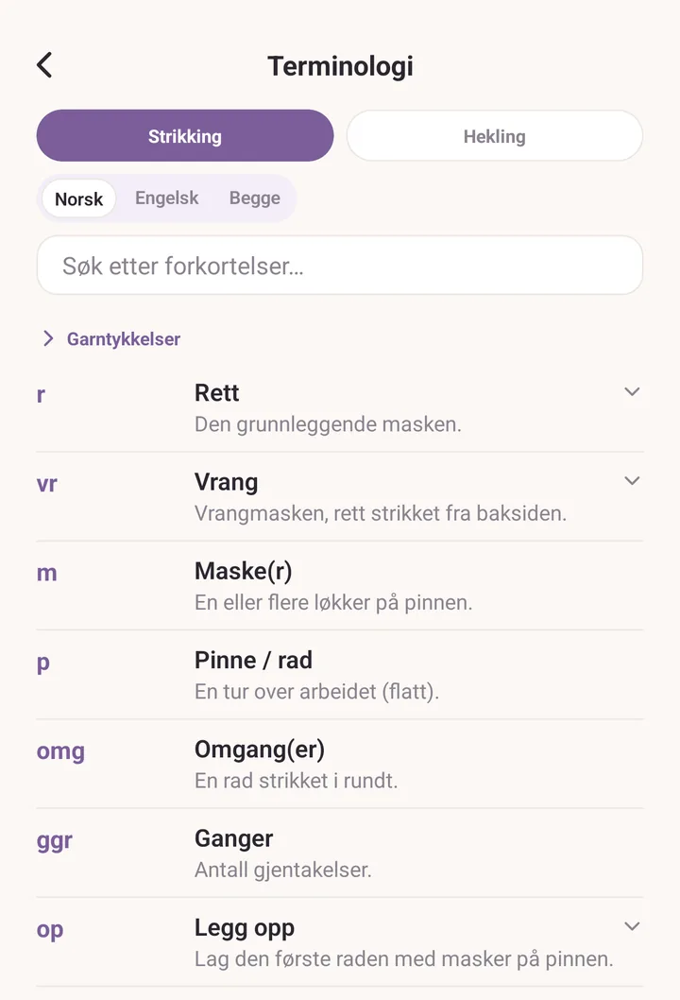
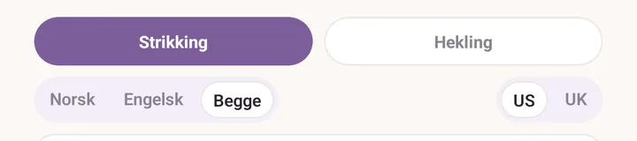
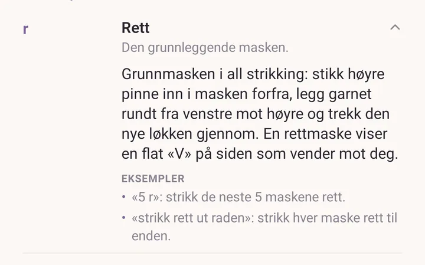
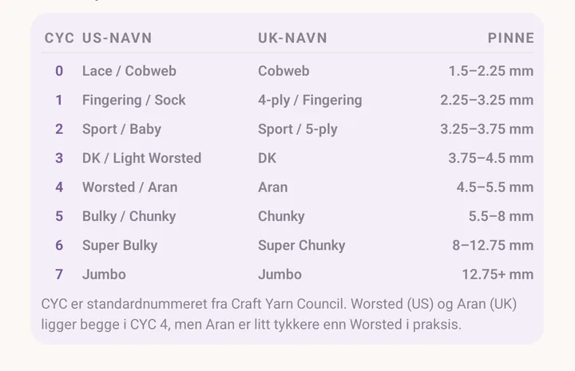

Terminologiordliste
En tospråklig ordliste for strikking og hekling. Norske forkortelser og engelske, side om side eller én om gangen, med amerikanske og britiske varianter der de skiller lag.
Slik åpner du den
Tre veier inn:
- Mer > Terminologi, i bolken Verktøy.
- Knappen Terminologi øverst i oppskriftsleseren, som åpner ordlisten på oppskriftens håndverk med en gang.
- Verktøyet Terminologi i verktøyvifta i PDF-leseren, som gjør det samme.
Inne i oppskriftsredigeringen, der du skriver dine egne oppskrifter, har bolken Forkortelser (valgfritt) sin egen velger fra ordlisten. Søk i den, huk av forkortelsene du vil ha, og knappen nederst legger dem inn i oppskriftens egen liste over forkortelser.

Håndverk
Bytt mellom Strikking og Hekling øverst. Ordlisten viser forkortelsene for det håndverket.
Språkvelgeren
Under håndverkschipsene: Norsk, Engelsk, Begge.
- Norsk: bare de norske oppføringene. Best når du følger en norsk oppskrift. Kulturelt norske begreper (lus, kofte, selburose, Setesdal) hører hjemme her.
- Engelsk: bare de engelske oppføringene. Best når du følger en engelsk oppskrift.
- Begge: hver oppføring viser den norske og den engelske formen side om side. Best når du oversetter midt i en oppskrift.
Velgeren husker valget ditt til neste gang, og den er uavhengig av språket appen selv står i. Du kan kjøre Purl på norsk og bla i de engelske forkortelsene.

Søk
Skriv i søkefeltet. Det treffer forkortelser, hele navn, definisjoner, de lengre forklaringene, eksemplene og alternative skrivemåter. Aksenter foldes bort, så "lus" finner "lús" og "2 saman" finner "2 sm".
Trykk på en forkortelse for å lære mer
Forkortelser med en fyldigere omtale viser en liten vinkel. Trykk på raden, og den åpner seg til en forklaring i klart språk med ett eller to gjennomarbeidede eksempler, på det språket du blar i.

Amerikanske og britiske hekleforkortelser
Med Hekling valgt og søket tomt advarer et kort nær toppen om at forkortelsene som vises er de amerikanske, og gir deg den raske omregningen, fordi britiske oppskrifter bruker de samme navnene på andre masker. De enkelte forkortelsene har også den britiske varianten stående i raden.
Garntykkelser
Garntykkelser er et sammenfoldet kort nær toppen av listen. Trykk det opp for en oppslagstabell: CYC-nummeret, US-navn, UK-navn og en typisk Pinne.
Merknaden under forklarer at CYC er standardnummeret fra Craft Yarn Council, og at Worsted og Aran begge ligger på CYC 4 selv om Aran er litt tykkere i praksis.
Navnene på garntykkelser står på engelsk gjennom hele appen. Det er bransjens egne navn, og å oversette dem ville ta bort gjenkjennelsen som gjør dem nyttige.

Det som ikke er med
Dine egne forkortelser. Egne forkortelser for din oppskrift hører hjemme på den oppskriftens liste over forkortelser i oppskriftsredigeringen, ikke i ordlisten. Ordlisten holder seg kanonisk.
Se også
- Oppskrifter: bruke ordlisten mens du skriver en oppskrift.
- PDF-verktøy: verktøyet Terminologi i verktøyvifta i PDF-leseren.
- Kalkulator: det andre verktøyet som leser tall fra en oppskrift for deg.